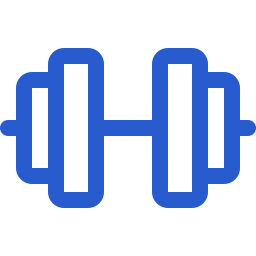

有些变化，要回头看才发现。
翻过的书页，练过的动作，花在喜欢的事上的时间。
把它们记下来，慢慢就有了自己的轨迹。
10分钟，1000次。
一次记清楚。
时间、数量，可以单独记，也可以一起记。
拖动滑块，或直接输入准确的数值，
再添一句备注，留住当时的感受。
- 分钟、小时、天，按习惯选择
- 次、页、千米等20种常用数量单位
- 选好发生日期，也能补记过去
记好一次，给自己一点庆祝。彩纸与 Emoji 交替出现。
今天的一点，
后来的一大段。
累计看走过多远，分布看投入多少，
日历看每天的节奏。
时间和数量各自清楚，也都值得回看。
按自己的节奏，
把喜欢的事继续下去。
每天的阅读、每周的运动，或每月的一次练习。
设置日、周、月频率，首页就按对应周期显示。
挑一个喜欢的颜色和图标，也可以用 Emoji 给项目起名。
排好顺序，下次打开，一眼找到想记录的事。
阅读跑步练琴写作

健身你可能想知道
可以用来记录哪些事？
阅读的时间和页数、跳绳的次数、运动或练琴的时间，都可以。每个项目独立设置记录方式、数量单位、范围与默认值，时间和数量分别累计。
一天可以记录多次吗？
可以。每次记录都会增加当天实际投入与历史累计。例如跳绳1000次，再记500次，当天就是1500次、2条记录。
忘记记录，或记错了怎么办？
在首页打开记录面板，选择实际发生的日期即可补记。已有记录可以在项目详情中修改或删除，统计随之更新。新记录与单条删除还提供短时撤销。
从今天的一次投入开始。
微信扫码使用